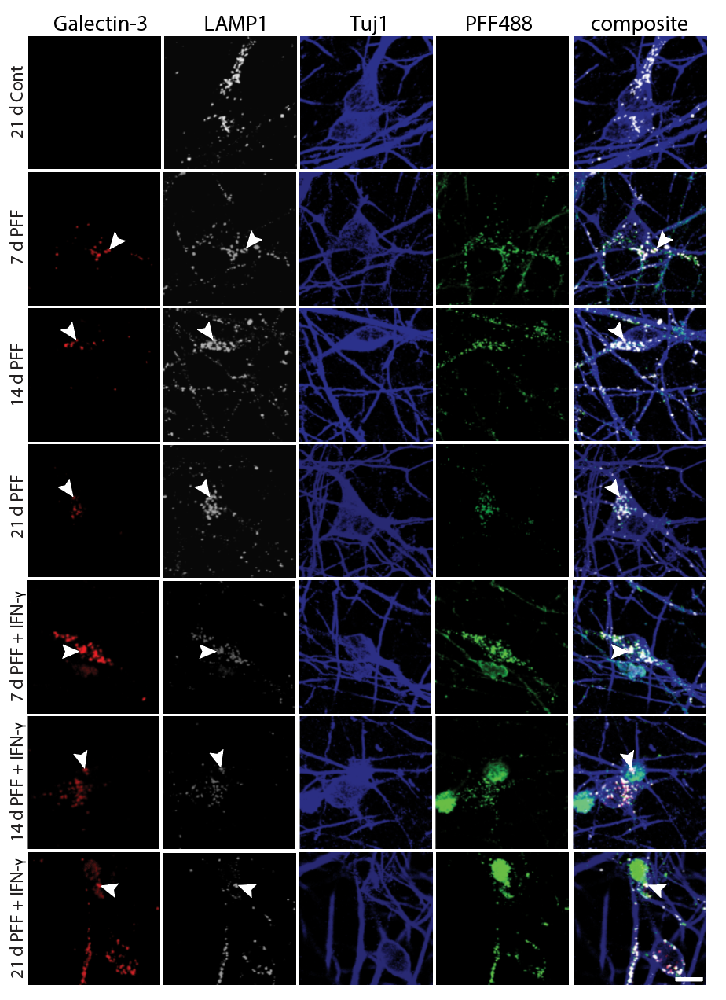

Preclinical Target Identification — Receptor-Level Dissection of Microglial Cytokine Signaling
Before testing biologic interventions, we needed to identify which cytokine–receptor axes on neurons are responsible for microglia-driven α-synuclein pathology. To do this, we engineered iPSC-derived dopaminergic neurons expressing defined cytokine receptors — IFNGR1, TNFR2, or IL1R1 individually, all three simultaneously, or EGFR as a growth-factor control — and co-cultured them with activated microglia in the presence of fluorescently labeled α-synuclein PFFs (PFF488). This receptor-defined platform allowed us to map the contribution of each inflammatory axis to fibril retention and neuronal vulnerability, directly informing which pathways to target with biologic agents.
Experimental Design
iPSC-derived DA neurons were transduced to express individual or combined cytokine receptors, then plated in co-culture with activated microglia-like cells. PFF488 was added to model the dual-hit paradigm (fibril exposure + microglial inflammatory milieu). Confocal imaging was used to track microglia (white), PFF488 (green), and Tuj1+ neuronal processes (blue) across all receptor conditions.
